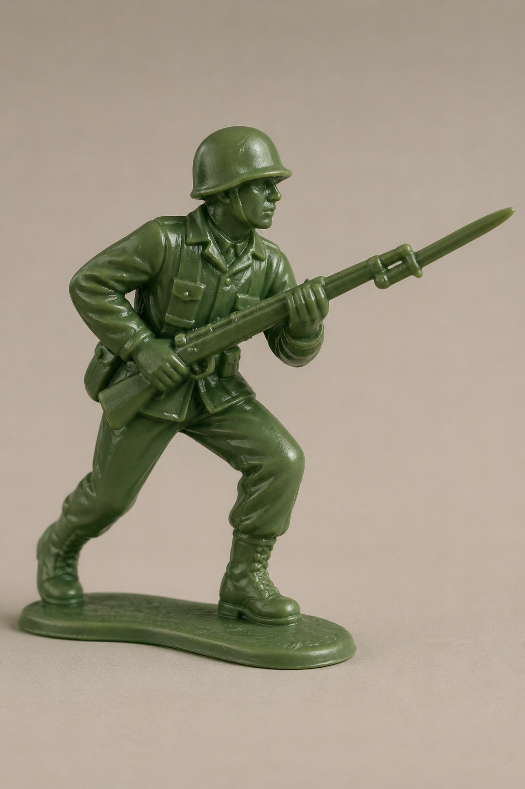

Strange, oh the peace of Christmas Day;
strange, for the sound of “Silent Night”
upon lips that usually curse and rail
as bombs burst forth in a fiery hell.
But come the morn, once more we attack -
peace shattered by the gunfire's crack;
the calm and rest of twenty-four hours
quickly consumed by blood and by powers.
Everywhere hate and everywhere spite,
everywhere the smell of burning white,
with the senseless primal urge coursing through,
my mind dulled, and my muscles obeying it too:
Suddenly from a hut bursts a child,
but he hasn't gone far before my sight him riled;
and as his body convulses, falls in the dust,
from his tiny hands rolls a soccer ball, tossed.